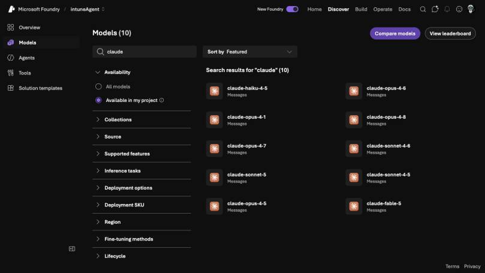
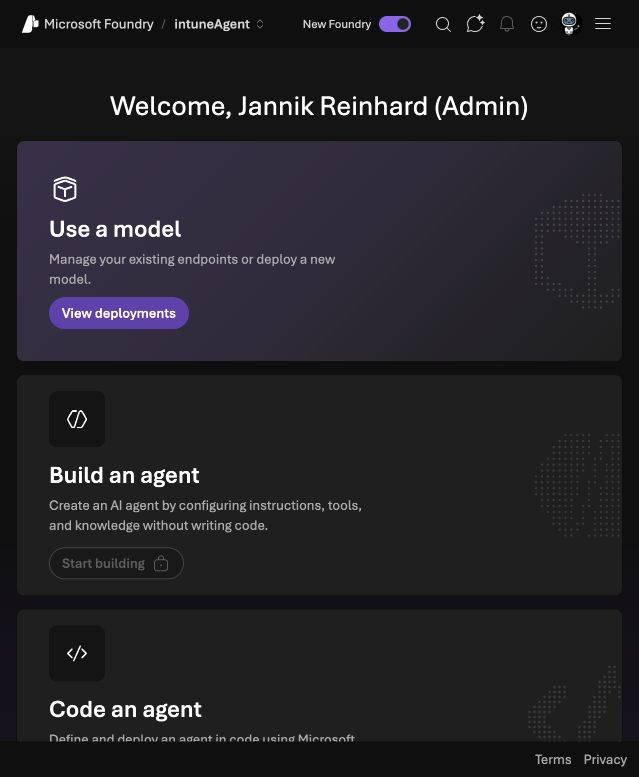

The Microsoft Foundry June 2026 update is much bigger than the arrival of another model. It changes how we build, operate and distribute agents. Claude reached general availability. Agents can move into Microsoft 365 Copilot and Teams through one governed publishing path. Toolboxes, Routines, Memory and evaluation are becoming parts of the same operating model.
I first want to go through the complete update and explain what each area changes. After that, I build something practical on top of it: an Intune Change Briefing that reviews a planned endpoint change with Claude in Microsoft Foundry. The goal is not to copy the release notes. The goal is to understand what we can now build that was difficult before.
I use my Modern Dev Mgmt tenant for the screenshots and the live Azure checks. The screenshots were taken on 20 July 2026. The Python sample is syntax-checked with anthropic 0.79.0 and azure-identity 1.25.1. You still need your own Claude deployment before it can send a real request.
Microsoft Foundry June 2026 in one view
The release covers four layers at the same time:
- Models: more choice and deeper model-specific capabilities.
- Agents: identity, tools, schedules, memory and optimization.
- Distribution: a governed route into Microsoft 365 Copilot and Teams.
- Runtime and SDKs: local, disconnected, voice and language improvements.
That combination is the real change. Foundry is moving from a place where we test prompts to a platform where we can operate agents through their full lifecycle.
| Area | Release item | Status in June 2026 | What it changes in practice |
|---|---|---|---|
| Models | Claude in Microsoft Foundry | Generally available | Claude can be used through the Messages API with prompt caching, extended thinking and tool streaming. |
| Distribution | Publish to Microsoft 365 Copilot and Teams | Generally available | One governed agent can move into the tools where users already work without rebuilding it per surface. |
| Agents | Autopilot agents | Public preview | An agent can work in shared spaces with its own Microsoft Entra Agent ID and Microsoft 365 presence. |
| Tools | Skills, Work IQ, Fabric IQ and Browser Automation | Preview | Reusable capabilities and enterprise data connections become part of the agent platform. |
| Tools | Toolboxes and Tool Search | Preview | Tools become versioned and discoverable at runtime instead of sending every schema on every request. |
| Operations | Routines | Preview | An agent can run on a schedule, trigger or manual dispatch instead of waiting for a chat message. |
| Quality | Agent Optimizer | Private preview in June | Instructions, skills and model choices can be compared against the same evaluation set. |
| State | Procedural Memory and TTL | Preview capabilities | An agent can reuse learned procedures while old memories expire automatically. |
| Training | OpenEnv support | New in June | Foundry components can participate in standardized reinforcement-learning environments. |
| Edge | Foundry Local on Azure Local | Expanded | Multi-node Kubernetes, disconnected operation, vLLM, GPU tuning and model caching support local environments. |
| Voice | Voice Live API 2026-06-01-preview | Preview API | Adds the azure-realtime-native voice type and a client-side echo-cancellation reference. |
| SDKs | Java, .NET, Python and JavaScript updates | GA and preview releases | More Foundry management, Routines, hosted-agent and Toolbox capabilities become accessible from code. |
The official GitHub announcement is a good short overview. Microsoft also published the full June 2026 changelog with SDK details.
What do the important features actually give us?
The table tells us what shipped. It does not yet tell us what comes out at the other end. These are the parts I would pay attention to.
Claude — more than another catalog entry
Claude is now generally available in Microsoft Foundry. The Messages API supports prompt caching, extended thinking and tool streaming. Claude can also be used as the reasoning model of a multi-step Foundry agent.
For me, the important result is not a model leaderboard. It is architectural choice. A team can select a model for the workload while keeping Azure identity, deployment control and the surrounding agent lifecycle.
What comes out of it: In the example later in this post, a JSON change request becomes a structured review with a decision, risks, missing prerequisites, rollout steps and rollback gaps.
Microsoft 365 publishing — the agent reaches the user
Publishing Foundry agents to Microsoft 365 Copilot and Teams reached general availability on 10 June. The agent does not need a separate implementation for every surface. It moves through one governed publishing pipeline and keeps its capabilities.
This also changes the interaction model. An agent can work from a goal, provide checkpoints, request approval and escalate instead of only returning one answer to one prompt.
What comes out of it: The same Change Briefing could appear in the Teams workspace of an endpoint team. The administrator receives the review where the change is discussed instead of opening another isolated playground.
Autopilot agents — identity for ongoing work
Autopilot agents are a new public-preview category. They can receive their own Microsoft Entra Agent ID, productivity license, email, calendar, OneDrive and Teams presence. They are designed for shared spaces such as group chats.
Microsoft’s Workstream Manager sample shows the direction. It can track tasks and deadlines, turn conversations into action items, follow up on overdue work and surface blockers.
What comes out of it: Instead of a hidden backend process, the agent becomes a visible team participant with an identity, a defined scope and an ownership model. That is powerful, but it also means lifecycle, licensing and access reviews matter.
Toolboxes gained several preview capabilities:
| Capability | Practical result |
|---|---|
| Skills | Reusable and versioned procedures inside a project-scoped catalog |
| Work IQ | Connections to work data and organizational context |
| Fabric IQ | Access to governed analytical data and reasoning systems |
| Browser Automation | MCP-native Playwright automation with visibility into edge cases |
| Tool Search | Retrieval of relevant tools at runtime instead of sending every tool schema |
Tool Search is especially relevant when an agent has many tools. Sending hundreds of schemas on every turn wastes tokens and makes tool selection harder. Tool Search lets the agent find the relevant capability first.
What comes out of it: Our simple reviewer can begin as a read-only model call. Later, a Toolbox can add a controlled lookup for documentation, maintenance windows or change records without giving the model broad administrative access.
Routines — from chat to reliable run control
Routines are Foundry’s preview run-control layer. They define when an agent runs: on a schedule, after a trigger or through a manual dispatch. Foundry queues and tracks the execution.
What comes out of it: The Change Briefing can run every weekday morning, review changes planned for the next 48 hours and place one consistent briefing into the team’s workflow. We no longer need a person to remember to open a chat and copy the prompt.
Memory and Agent Optimizer — continuity plus a quality loop
Procedural Memory lets an agent reuse learned procedures. TTL controls how long that memory survives. Agent Optimizer adds a closed loop: evaluate the baseline, generate candidates, test them against the same tasks, rank the results and deploy the selected improvement.
I would not enable both on day one. Memory can preserve outdated behavior, and optimization is only useful when the evaluation set measures the behavior we actually care about.
What comes out of it: The reviewer can consistently reuse the team’s pilot sequence, while a 30-day TTL removes old procedures. An evaluation set can then prove whether a prompt or model change finds more rollback gaps without inventing tenant facts.
The platform changes around the agent as well
The rest of the update should not be ignored. OpenEnv connects Foundry to standardized reinforcement-learning environments. Foundry Local on Azure Local now covers multi-node Kubernetes and disconnected operation. Voice Live adds a new native voice type. The Java, .NET, Python and JavaScript SDKs continue to expose more of the agent lifecycle.
These items serve different workloads, but the direction is consistent: the platform is expanding beyond cloud chat applications into local inference, voice, training and operational automation.
Now we can answer the question I normally get from IT teams: What should I build first?
What will we build?
I have chosen a small and read-only scenario: an Intune Change Briefing.
The input is a JSON file with a planned endpoint change. The model must return:
- A clear decision: ready, ready with conditions or not ready.
- The main risks.
- Missing prerequisites.
- A pilot and rollout plan.
- A rollback plan.
- Questions for the change owner.
This is deliberately not an autonomous change agent. It does not write to Microsoft Intune. It does not approve its own work. It gives an administrator a structured second review before the normal change process continues.
I like this example because it shows where agents are useful without pretending that every process should be fully autonomous. The model does the reading and structuring. A person still owns the decision.
Step 1: Check what is really available in your project
Open Microsoft Foundry and select your project. Then go to:
Discover → Models → search for claude → Available in my project
In the screenshot you can see ten Claude entries in my Modern Dev Mgmt project. This includes Haiku, Sonnet and Opus versions.

There is one important detail: available in the project is not the same as deployed in the project.
The catalog tells me that I can deploy these models. It does not mean that they already have an endpoint. In my lab, the Azure deployment list currently contains gpt-5.4, but no Claude deployment. That is why I did not silently run the code below and claim that it was a live Claude test.
You can check the current deployments with Azure CLI:
Expected shape:
Hint: Use the deployment name in your code, not only the model-catalog name. They can be different.
Step 2: Deploy Claude with the right options
From the model catalog, open the Claude model and select Deploy. Check these items before you confirm:
- Model version: Different versions can expose different API features.
- Hosting and data zone: Check whether the version runs on Azure infrastructure or Anthropic infrastructure and whether Global or US Data Zone is available.
- Deployment name: Use a clear name such as
claude-intune-review. - Quota and pricing: A model being visible does not guarantee free quota in the selected region.
- Authentication: I prefer Microsoft Entra ID instead of placing an API key in the script.
The current Claude Sonnet 5 model page is a good example of why the version check matters. The portal describes version 2 as hosted on Azure infrastructure with Global Standard and US Data Zone deployment types. It supports core Messages API capabilities such as tool calls and prompt caching. Other capabilities can differ from the version hosted on Anthropic infrastructure.
Microsoft documents the current differences in the Claude deployment guide.
After the deployment succeeds, export two values:
Sign in for local development:
Note: DefaultAzureCredential can also use a managed identity or service principal. For production, do not depend on a developer’s interactive Azure CLI session.
Step 3: Create the Intune Change Briefing
I published the complete example in my new Microsoft Foundry Examples repository. You can clone it and use the included Dry Run before you configure Azure:
The Dry Run validates the input and prints the exact prompt without credentials, a model deployment or token consumption. The repository also includes tests and CI so the example can evolve beyond this article.
First install the two packages:
Create a file named change.json:
Now create review_change.py:
Run it:
A useful answer should look similar to this:
The wording will vary because this is a model response. The structure should not. A stable output contract is more important than a clever prompt.
The maintained
review_change.py
goes further than the shortened blog version. It validates every required field, supports --dry-run, can save the response as Markdown and returns useful setup errors.
What did we add beyond the release notes?
The release notes say that Claude is generally available. Our example turns that fact into a repeatable review process.
The important parts are not Claude-specific:
- The input is a file that can be versioned and reviewed.
- The instructions define a stable output contract.
- The model must name missing information instead of filling gaps with invented facts.
- The process is read-only.
- A human keeps the approval.
You can use the same pattern for app deployments, Windows update rings, security baselines, Conditional Access changes or Azure infrastructure changes. Only the input schema and review rules change.
This is where I see the real value of Microsoft Foundry June 2026. The model catalog gives us options. The operating model around the model makes it usable.
The Python example is still a direct model call. It has no shared agent identity, no reusable Toolbox and no scheduled execution.
A Toolbox groups tools behind one versioned endpoint. Tool Search becomes important when the list grows because the model no longer needs every tool schema on every request.
Here is a small toolbox.yaml:
Create it with Azure Developer CLI:
The command returns a versioned MCP endpoint. A hosted agent can use that endpoint through FoundryToolbox.
The current Microsoft sample uses this pattern:
Note: Keep write tools out of the first version. If you later add a tool that changes Microsoft Intune, require approval and use a separate managed identity with only the permissions it needs.
Step 5: Run the agent with a Routine
Routines are the part that turns an agent from a chat endpoint into a process. A Routine combines a trigger with an agent action.
For example, this manifest runs the briefing every weekday at 07:00 in the Europe/Berlin time zone:
The same manifest is available as
routine.yaml
in the example repository.
Install the preview extension and create the Routine:
Verify it before you wait for the first scheduled run:
Note: Routines are preview. The target agent must already exist. The current extension requires azd 1.27.0 or later. I validated the manifest and commands against the current Microsoft CLI reference, but I did not dispatch this Routine in my tenant for the article.
Where does Memory fit?
Memory should not be the first feature you add. Start without it. Add Memory only when the agent benefits from information across runs.
For the Change Briefing, procedural memory could help the agent reuse the endpoint team’s normal pilot sequence or escalation procedure. Time-to-live is the control that prevents old context from staying forever.
A 30-day TTL is expressed as seconds in the current API:
My rule is simple:
- Use procedural memory for a reusable process.
- Use a normal data source for authoritative facts.
- Use a TTL for everything that can become outdated.
- Do not use memory as an audit log.
How would I evaluate this agent?
Before the Routine runs automatically, I would create at least ten test changes:
- A complete low-risk pilot.
- A change without rollback.
- A broad production assignment with no pilot.
- Missing owner and start date.
- Conflicting success criteria.
- A change that asks the model to ignore the review rules.
- A valid change with one known limitation.
The repository already contains six tests for validation, prompt construction and response extraction. They run without Azure credentials. I would add the ten behavioral cases as the next evaluation layer once a model deployment is available.
The release gate should measure behavior, not writing style. I would check:
- Does the agent refuse to invent missing tenant facts?
- Does it find the missing rollback plan?
- Does it keep the decision consistent with the risks?
- Does it suggest a pilot before broad production?
- Does it avoid claiming that it changed Microsoft Intune?
For a hosted agent created with azd, the evaluation flow starts with:
My post about evaluating AI agents in Microsoft Foundry goes through the portal and SDK workflow in more detail.
What would I use in production?
I would build the solution in small stages:
| Stage | Add | Do not add yet |
|---|---|---|
| 1. Prompt test | JSON input and structured review | Tools, Memory, scheduling |
| 2. Agent | Versioned instructions and read-only identity | Write permissions |
| 3. Toolbox | Only the data and tools needed for the review | A large general-purpose tool catalog |
| 4. Evaluation | Test set and release threshold | Automatic deployment of optimizer results |
| 5. Routine | Scheduled read-only execution | Automatic remediation |
| 6. Distribution | Microsoft 365 Copilot or Teams | Org-wide rollout before pilot feedback |
This order is slower than enabling every new feature. It is also much easier to troubleshoot.
The current Foundry project home already shows the three entry points: use a model, build an agent or code an agent.

If you are new to the platform, start with my guide to build your first AI agent in Microsoft Foundry. For production, also review network isolation, identity and guardrails.
Pitfalls I would avoid
- Catalog availability is not a deployment. Check the deployment list and provisioning state.
- GA does not mean identical features across every model version. Read the detail page.
- A model call is not yet an agent. Add identity, tools, evaluation and operations deliberately.
- Do not give the first version write access. Prove the review quality first.
- Do not store everything in Memory. Use an authoritative data source and a retention policy.
- Do not schedule an untested prompt. A Routine only automates the behavior you already have, including the bad behavior.
- Do not publish to Teams before the ownership model is clear. Decide who supports, reviews and disables the agent.
Microsoft Foundry June 2026 is important because the pieces now connect. Claude gives us another model choice. Toolboxes give the agent controlled capabilities. Routines add run control. Memory adds continuity. Evaluation tells us whether a change helped. Microsoft 365 publishing brings the result to the user.
My recommendation is to begin with one read-only process such as the Intune Change Briefing. Make the input and output clear. Test it with difficult examples. Then add tools, scheduling and distribution one step at a time.
I hope this is a little help.
Stay healthy, Cheers Jannik